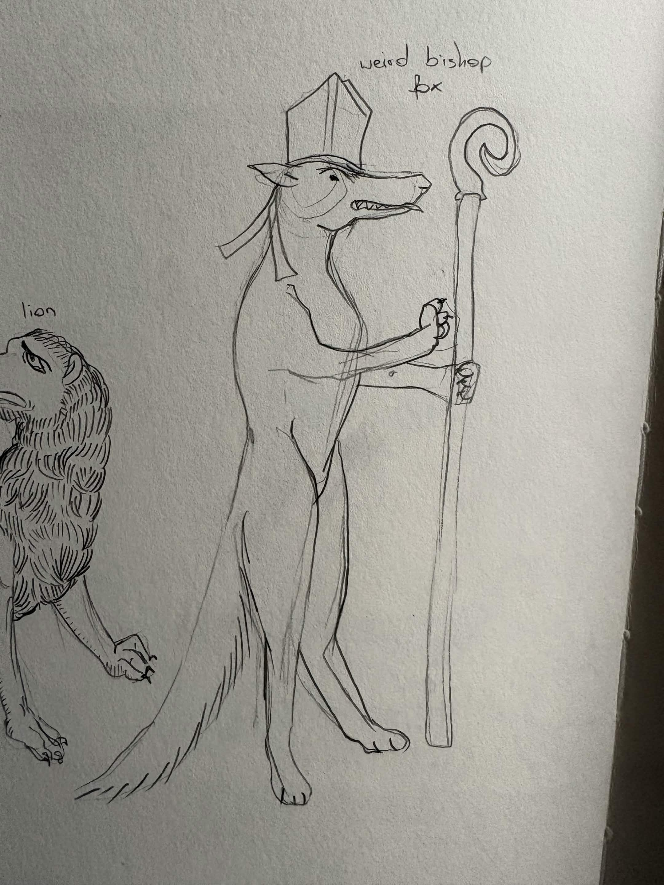
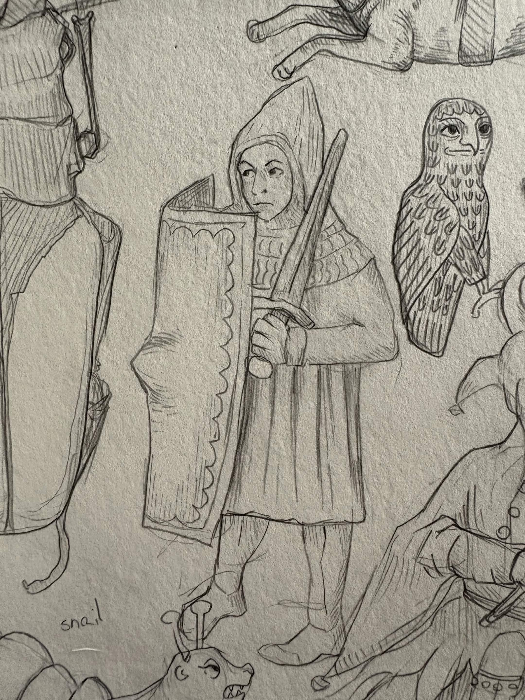
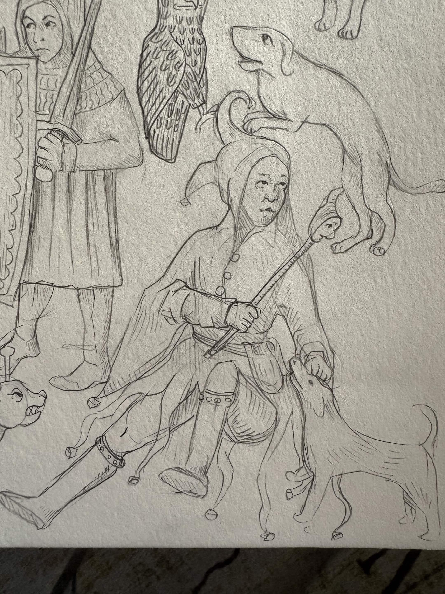
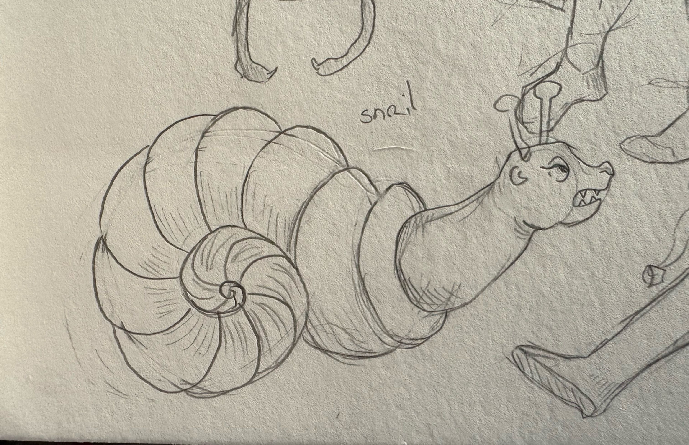
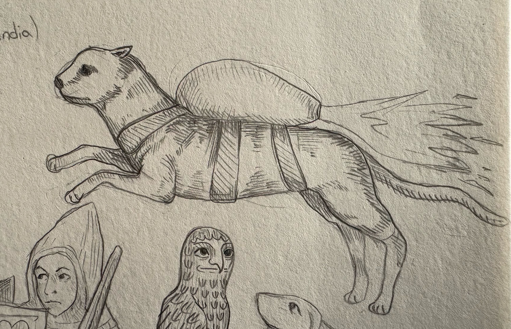
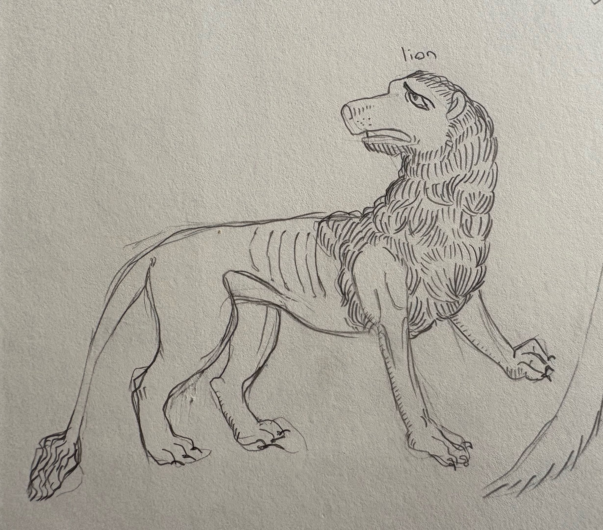

Portfolio > Medieval Studies
Medieval Studies
Sketches and Works from studying Medieval Art. The pencil sketches are studies and not origianl works.

Pencil sketch of a fox pretending to be a bishop.

Pencil sketch of a soldier with a large shield and an owl.

Pencil sketch of a jester and a dog.

Pencil sketch of a angry snail.

Pencil sketch of a rocket powered cat.

Pencil sketch of a sad lion.